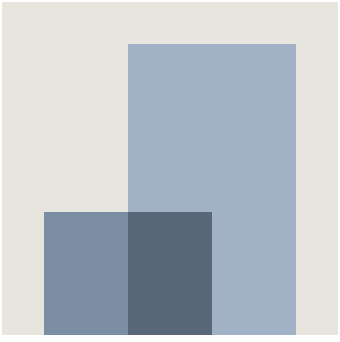
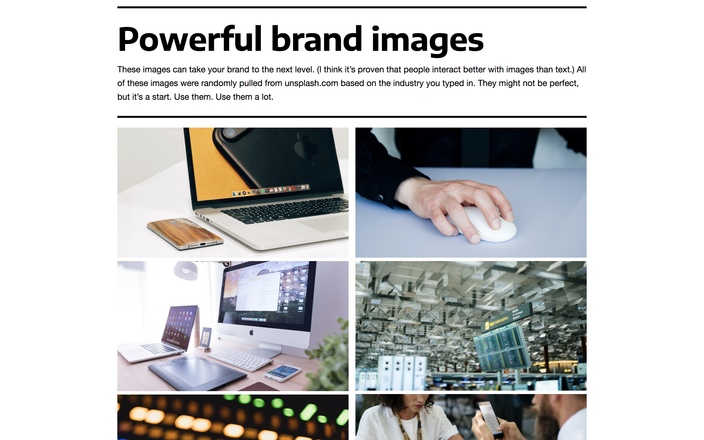
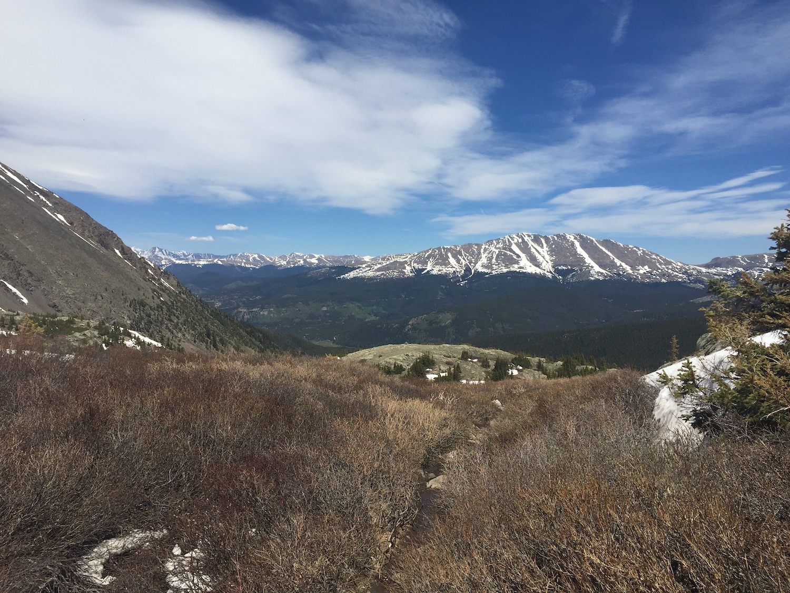
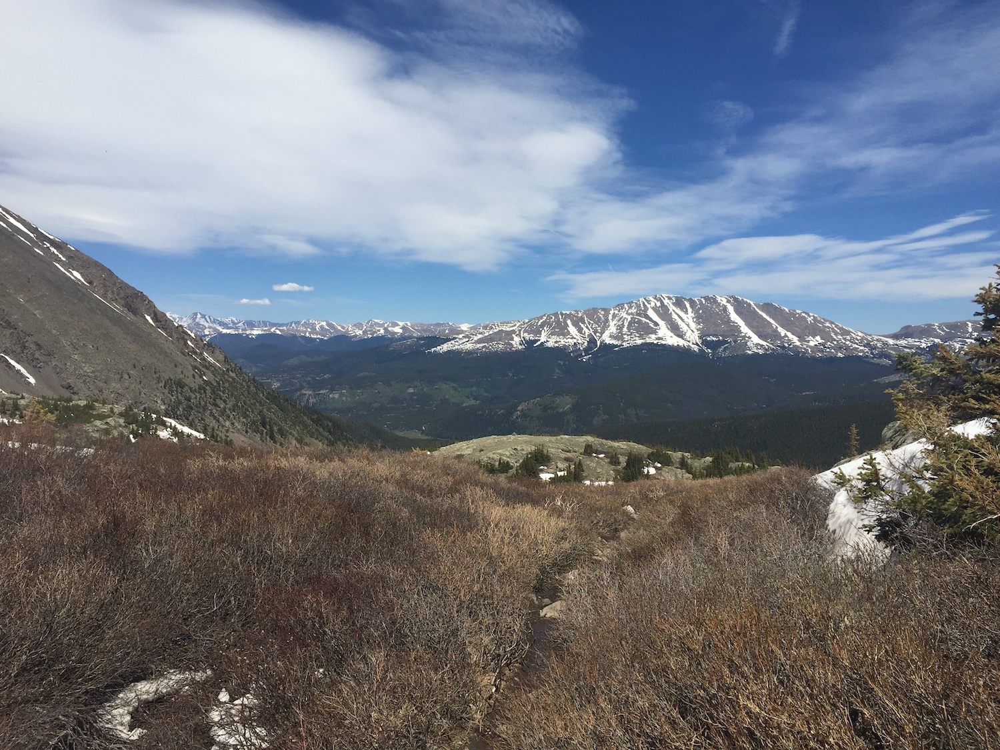

August 2021 - Present | New York City
Stripe is an Irish-American financial services and software as a service (SaaS) company dual-headquartered in San Francisco, United States and Dublin, Ireland. The company primarily offers payment processing software and application programming interfaces (APIs) for e-commerce websites and mobile applications.
September 2019 - July 2021 | Los Angeles
 Red Hat, Inc. is an American multinational software company that provides open source software products to enterprises. Founded in 1993, Red Hat has its corporate headquarters in Raleigh, North Carolina, with other offices worldwide. It became a subsidiary of IBM on July 9, 2019. Red Hat has become associated to a large extent with its enterprise operating system Red Hat Enterprise Linux.
Red Hat, Inc. is an American multinational software company that provides open source software products to enterprises. Founded in 1993, Red Hat has its corporate headquarters in Raleigh, North Carolina, with other offices worldwide. It became a subsidiary of IBM on July 9, 2019. Red Hat has become associated to a large extent with its enterprise operating system Red Hat Enterprise Linux.
January 2018 - Present | Los Angeles
 Engage is a web based platform designed to digitize the process of booking anything from a speech to a once in a lifetime experience. Engage is the AirBnb for events, allowing individuals to book talent online for a keynote speech, buy tickets to talent's pop-up events, or engage with talent in a unique, personalized way. Currently, the process of booking someone is slowed by inefficient email exchanges, scanning and faxing contracts and common questions. EngageTM puts the entire booking process in one place, making it much simpler for the user and the talent.
Engage is a web based platform designed to digitize the process of booking anything from a speech to a once in a lifetime experience. Engage is the AirBnb for events, allowing individuals to book talent online for a keynote speech, buy tickets to talent's pop-up events, or engage with talent in a unique, personalized way. Currently, the process of booking someone is slowed by inefficient email exchanges, scanning and faxing contracts and common questions. EngageTM puts the entire booking process in one place, making it much simpler for the user and the talent.
September 2017 - December 2018 | Denver
 As a child, Jake Olson lost sight due to a rare form of retinal cancer. He never gave up on his dream to play for the USC Trojans. He became the first blind college football player to play when he snapped on September 2nd, 2017 against Western Michigan. We are unrelated. I built a responsive website using Ruby on Rails to focus on Jake’s story and speaking inquiries. I handled interactions using jQuery and created custom styles based on skeleton.css. The website uses Google Analytics and custom Google Forms to keep track of visitor information. In 2018, I transitioned the website to Squarespace to simplify scaling, frequent updates, and speaking requests. I frequently balanced demands from his family and manager to create a website that everyone was happy with :).
May 2017 - August 2017 | Denver
Karsh Hagan is a boldly independent, multi-disciplined marketing, design and technology company in Denver, Colorado. As a purpose-driven collection of makers, doers, innovators, and explorers of brave ideas, we believe brands have to transcend what they make or do, and stand for something bigger to make a lasting impact in the world today. We don't just do advertising. We don't just do design. We don't just build websites or mobile apps. We solve real-world business challenges with creative solutions that generate positive results and add lasting value to people's lives.
June 2014 - May 2017 | Denver
To keep a long story short, I started a business in 2014. Since then, it’s failed. Gone, out of business, nowhere to be found. While Shiftcloud was still operating, I developed it’s brand among a million other things. I was the only one on the team that could do it so I took a stab at it. To think through everything from a website to business cards takes a lot time. Even though Shiftcloud didn’t turn out so well, I’m very happy with the work I did. (By the way, I also managed all the finances, led our coders through development, and actively participated in countless pitches.)
August 2015 - May 2019 | Class of 2019
BS Computer Science | Economics Minor | Cultural Anthropology Minor
Independent Study: Developed Google Sheets scheduling algorithm add-on for Coach K’s family (Debbie Krzyzewski) to improve the Duke v. UNC student walkup line. Adopted by 30% of Cameron Crazies in 2020.
 Duke University is a private research university in Durham, North Carolina. Founded by Methodists and Quakers in the present-day town of Trinity in 1838, the school moved to Durham in 1892. In 1924, tobacco and electric power industrialist James Buchanan Duke established The Duke Endowment and the institution changed its name to honor his deceased father, Washington Duke. The campus spans over 8,600 acres (3,500 hectares) on three contiguous sub-campuses in Durham as well as a marine lab in Beaufort. The West Campus—designed largely by architect Julian Abele, an African American architect who graduated first in his class at University of Pennsylvania School of Design—incorporates Gothic architecture with the 210-foot (64-meter) Duke Chapel at the campus' center and highest point of elevation, is adjacent to the Medical Center.
Duke University is a private research university in Durham, North Carolina. Founded by Methodists and Quakers in the present-day town of Trinity in 1838, the school moved to Durham in 1892. In 1924, tobacco and electric power industrialist James Buchanan Duke established The Duke Endowment and the institution changed its name to honor his deceased father, Washington Duke. The campus spans over 8,600 acres (3,500 hectares) on three contiguous sub-campuses in Durham as well as a marine lab in Beaufort. The West Campus—designed largely by architect Julian Abele, an African American architect who graduated first in his class at University of Pennsylvania School of Design—incorporates Gothic architecture with the 210-foot (64-meter) Duke Chapel at the campus' center and highest point of elevation, is adjacent to the Medical Center.
August 2011 - May 2015 | Class of 2015
Cum Laude Scholar (Top 10%)
Computer Science Award | Mathematics and Science Award
Kent Denver School is a private, co-educational, non-sectarian college preparatory high school and middle school in Cherry Hills Village, Colorado. It traces its origin back to the 1922 founding of the Kent School for Girls and has existed as a co-educational institution since 1974. The Kent School for Girls was founded by Mary Austin Bogue, Mary Louise Rathvon and Mary Kent Wallace on Sherman Street in Denver in 1922. Denver Country Day School, an all-men's high school, was founded by Andrews D. Black and Tom Chaffee in 1953, and the two schools relocated to a portion of the spacious Blackmer Farm in Cherry Hills Village in the 1960s. The schools operated side-by-side and with joint science classes until they merged in 1974 to become Kent Denver School.
Scheduling - a problem much older than tenting.
Duke basketball is great. I love Duke basketball! In fact, I challenge you to find a single Duke undergraduate who doesn’t feel the same way. Good luck. I’ll wait hours in line to get into games. I’ll even sleep out in a tent for months just to go to the Duke v. UNC game. I really don’t mind all the waiting in line or the time I’ve spent in a tent, I think it’s worth it. The only issue I have with this whole process is scheduling. I started to think to myself: what if I could build an algorithm that does all of the dirty work for you? With many modifications along the way, I ended up with a heuristic algorithm that looks at every available time slot (split up into 30-minute segments) that could be scheduled and assigns them a number. This number, or weight, is calculated through a series of functions that strive to maintain fairness, shift continuity, and user preferences. Once all weights have been assigned, the available shift with the highest weight is scheduled. The algorithm keeps running until every time slot is covered. This simple approach works remarkably well.
Should I take Lyft or Uber? Let Fairfares help you decide.
With Fairfares you can quickly compare Uber's surge price and Lyft's primetime percentage at your current location. Fairfares helps you save money on rides with ease. I designed the logo and UX for Fairfares. My main objective was to minimize a user’s time on the Fairfares app. The whole point is to identify the cheaper fare and quickly move to the ride sharing app. That’s why I kept the design simple and flexible. As of right, now Fairfares is in Phase #1, but can easily move to Phase #4 with little new design work. (It promotes further product development.) Currently, Fairfares averages 25 downloads a day and is still growing.

I have a love-hate relationship with branding. I really like it, and made a website to do it for me most of the time.
Check out the website here!
I really like branding. I do. It’s fun to brand an app, a website, a company. You name it, I like branding it. The thing is, for most small projects, you don’t want to get bogged down in branding. If I’m making a fun website or coding a cool algorithm, I want it to look nice and convey a brand, but I don’t want to spend half my time working on that because it’s only a matter of time before I move onto the next project. I made Brand Central Station as a tool to quickly develop a brand. Quickly make a color palette, find a font that fits, and get images that work with what you’re making. It does all the simple branding you need and it does it instantly. (I generate the color palette using a structured randomized color picker.)

News is biased and that's okay. It's not okay to get your news from one place.
Check out the website here!
Every news outlet has bias. It’s impossible to avoid it. In fact, I think it’s good to have an opinion as a news organization. By its nature, reporting the news offers a take on something that’s happening in the world. News outlets that claim to be unbiased are trying to hide their voice. They should embrace and recognize their opinion. If people want to become unbiased, they should try to read as many biased opinions as possible. That’s the point of biasedly unbiased.

I’ve made one track in my short lived career as a DJ.
Take a listen. It's ok.
I’m just your average Coloradan who like to hike.
But seriously, I like to hike. I’ve probably done anything and everything within a few hours of downtown Denver. I’m more of a hiker for the hike and not the actual work out. My friends know I’m incredibly particular when it comes to picking new hikes. I just want them to be worth it! (I’d like to think I have a pretty high threshold for difficulty. I’ll go on a 10 mile, 2000 ft elevation gain hike. Well, only if the ending is really worth it. Take a look at some of the pictures I took, I think they’re pretty cool.
 

These aren’t your run in the mill Instagram pictures.
I’ve been into photography for a while. I just think it’s fun, what can I say. I do have a trusty Nikon camera, which seems to do half of the work for me, but my phone will do most of the time. I took a photography class at Duke that really helped me out. It’s not that hard to learn how to take pictures, most of it is just going out there and doing it. (There’s really only 3 or 4 camera settings that a photographer can mess around with, the rest is outside of the camera.) I think that’s why I like it so much. It’s not about the getting or capturing the photo, it’s about crafting the photo.
What else are you supposed to do when you’re bored?
I had a lot of free time not too long ago. Some would probably say too much free time. I guess that can happen when you’re a second semester senior. Just because I had free time didn’t mean I wasted my time. One of my Duke bucket list items for a long time was to become a wood burning master. (They have special printers in a lab that burn wood. Yes, 3D printing is cool, but I am more of a wood burning person.) You might think that there’s a method to wood burning, and that the printer is really accurate and great all the time. Honestly, you could not be more wrong. Even with some stunning designs, it’s hard to predict how things will turn out in the end. After many ups and downs, I got pretty good at it.

Look! It's me in Joshua Tree! üèú Click on one of those buttons to see other stuff.